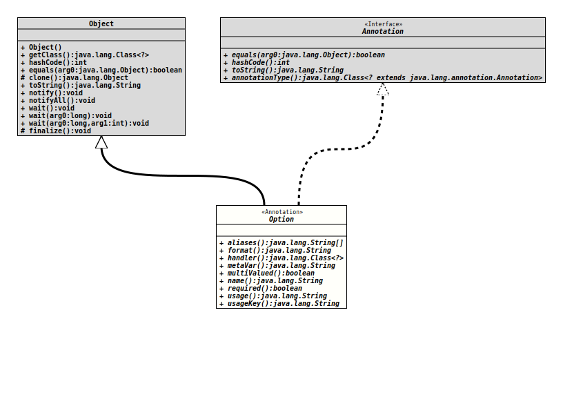

Annotation Interface Option
This annotation is used in the context of a configuration bean specification to mark a property that receives the value of a command line option. It will be placed to the getter for the property.
A command line option has a name that identifies it on the command line so that it can appear nearly everywhere in the parameter list, but of course before all arguments.
- Author:
- Thomas Thrien (thomas.thrien@tquadrat.org)
- Thanks to:
- Kohsuke Kawaguchi (kk@kohsuke.org), Mark Sinke
- Version:
- $Id: Option.java 1061 2023-09-25 16:32:43Z tquadrat $
- Since:
- 0.0.1
- UML Diagram
-

UML Diagram for "org.tquadrat.foundation.config.Option"
{kind=link}
-
Required Element Summary
Required Elements -
Optional Element Summary
Optional ElementsModifier and TypeOptional ElementDescriptionString[]Aliases for the option name.Some special value handlers (like theDateValueHandler) use this field for additional validation information, like a format String.Class<?>Specifies the command line value handler that translates the command line argument value to the type of the target property and places that value to the property.A name for the option value that is used in messages.booleanA flag that indicates whether the option is multi-valued, for mappings to aCollection.booleanSpecifies that the option is mandatory.A help text that will be displayed in the usage output ifConfigBeanSpec.getResourceBundle()returns noResourceBundleinstance or the call togetString()with the value ofusageKey()on the retrieved resources throws aMissingResourceException.The resource bundle key for a help text that will be displayed in the usage output.
-
Element Details
-
name
The name of the option. It has to be either a single dash ("-"), followed by a single character (short option), or two dashes followed by more than one character (long option).
The name may contain letters, numbers, and most special characters that are allowed on a command line, but no whitespace characters.
Some samples:
-r--port-1– valid but not really recommended--– invalid, but allowed on the command line, having a special meaning there-– invalid-name– invalid: had to be started with two dashes--f– invalid: not enough characters after the two dashes--port-number– valid, but dashes within the name are discouraged--port number– invalid because of the blank--port_number-@– valid but strongly discouraged
- Returns:
- The option name.
- See Also:
-
-
-
aliases
Aliases for the option name.
The aliases has to follow the same rules as for the option name itself.
- Returns:
- The list of aliases.
- See Also:
- Default:
- {}
-
format
Some special value handlers (like the
DateValueHandler) use this field for additional validation information, like a format String. It is ignored by most others.Refer to the documentation of those value handlers for the exact contents specification.
- Returns:
- The extended format specification according to the option handler, or the empty String.
- Default:
- ""
-
handler
Specifies the command line value handler that translates the command line argument value to the type of the target property and places that value to the property.
The default value
CmdLineValueHandler.classindicates that the effectiveCmdLineValueHandlerimplementation will be inferred from the type of the annotated property.If it is set to a class that extends
CmdLineValueHandler, an instance of that class will be created (therefore it has to provide a constructor with the signature<<i>Constructor</i>>(CLIDefinition, BiConsumer)) that is used as the handler. This is convenient for defining a non-standard option parsing semantics.Example
// this is a normal "-r" option @Option() boolean getFlag(); // This causes that MyHandler is used instead of the default handler // provided for boolean @Option( handler = MyHandler.class ) boolean getYesNo();- Returns:
- The
CmdLineValueHandlerimplementation.
- Default:
- org.tquadrat.foundation.config.cli.CmdLineValueHandler.class
-
metaVar
A name for the option value that is used in messages.
If left unspecified, that name is inferred from the type of the configuration property itself.
- Returns:
- A meta variable string.
- Default:
- ""
-
multiValued
boolean multiValuedA flag that indicates whether the option is multi-valued, for mappings to a
Collection.If set to
true, the same option can appear multiple times on the command line, and each value will be added to the underlying data structure.- Returns:
trueif the option is multivalued,falseotherwise.
- Default:
- false
-
required
boolean requiredSpecifies that the option is mandatory. This implies that the return type of the getter that is annotated with this annotation may not be
Optional.Note that in most of the command line interface design principles, options should be really optional. So use caution when using this flag. Consequently the default is
false.- Returns:
trueif the option is mandatory,falseotherwise.
- Default:
- false
-
usage
A help text that will be displayed in the usage output if
ConfigBeanSpec.getResourceBundle()returns noResourceBundleinstance or the call togetString()with the value ofusageKey()on the retrieved resources throws aMissingResourceException.The default is the empty String.
- Returns:
- The usage help text.
- Default:
- ""
-
usageKey
The resource bundle key for a help text that will be displayed in the usage output.
If not specified, the value will be derived from the name of the property like this:
USAGE_<PropertyName>The text will be retrieved from the
ResourceBundlethat is returned fromConfigBeanSpec.getResourceBundle(); if that isnullthe value ofusage()is taken instead.This allows to localise the usage output.
- Returns:
- The resource bundle key for the usage text.
- See Also:
- Default:
- ""
-